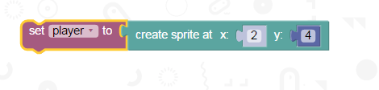
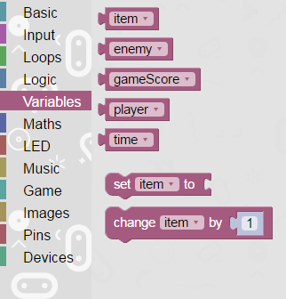
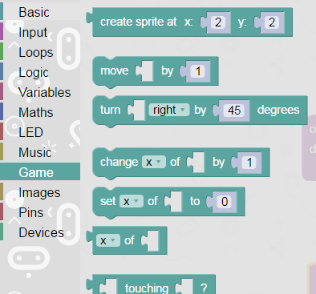
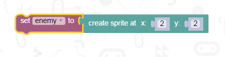
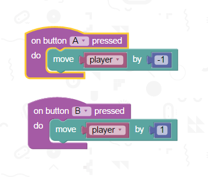
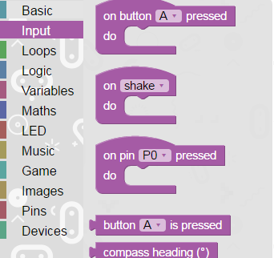
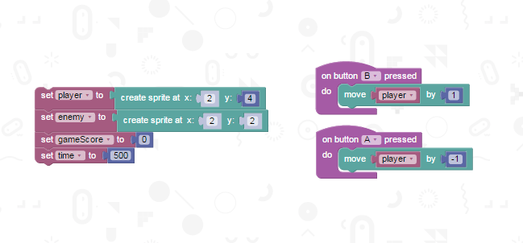
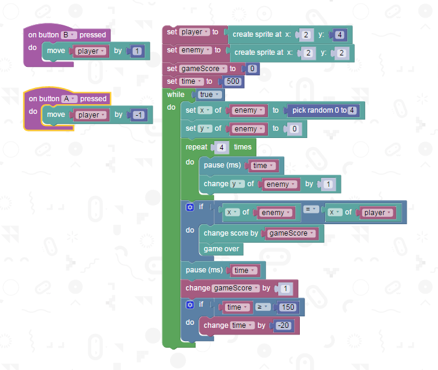

Today we will discover the power of the micro:bit using the simple block editor!
At the end you will have a simple playable game with scores so you can challenge your friends.
To start, we need to create a player character. This block of code shown below
will do this for you:

This will set your 'player' variable to a 'sprite' (or the pixel) to a location, given
by the second block's x and y values. The variables can be found here:

And the sprite block is found in the game tab:

The next step is to do the same for the initial enemy sprite:

Now, we want to be able to move our player- for this we need to take inputs and
react to them. This can be done using the input blocks, and putting what you want to happen inside them.

These are found here:

By now your blocks will look something like this:

Put this on your microbit by hitting the compile button at the top and dragging the downloaded .hex
file onto your plugged in microbit- you should see two dots on the screen,
and one of them you can move around by pressing the buttons on the microbit!
(rest of tutorial cut due to lack of temporal budget- plan is to include parallels to python programming for introducing children to python before moving to the other tutorials.)
Here's what the whole code looks like in block form for the working traffic panic game!
